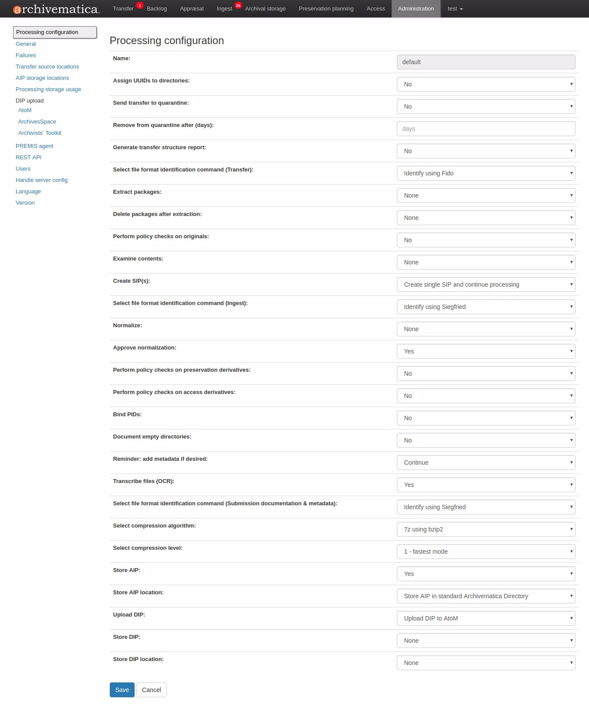
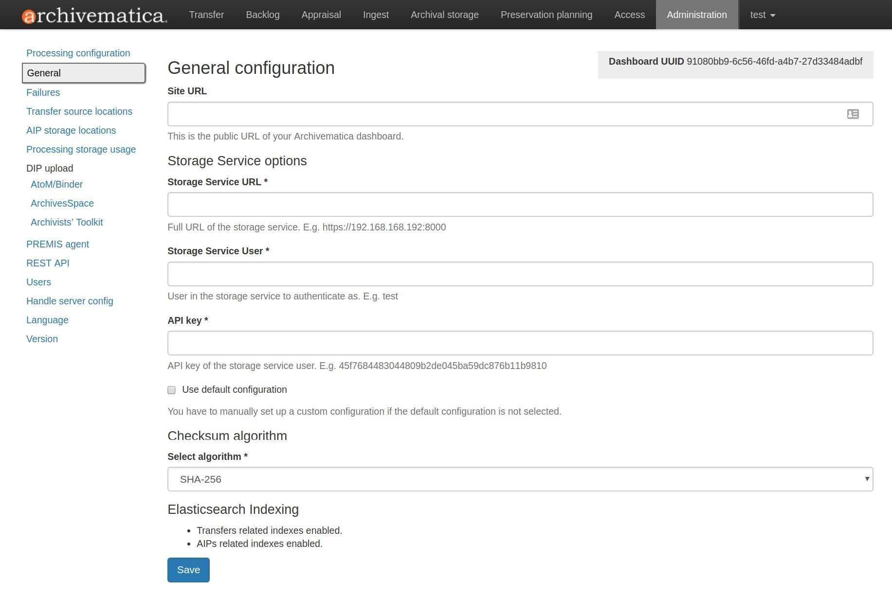
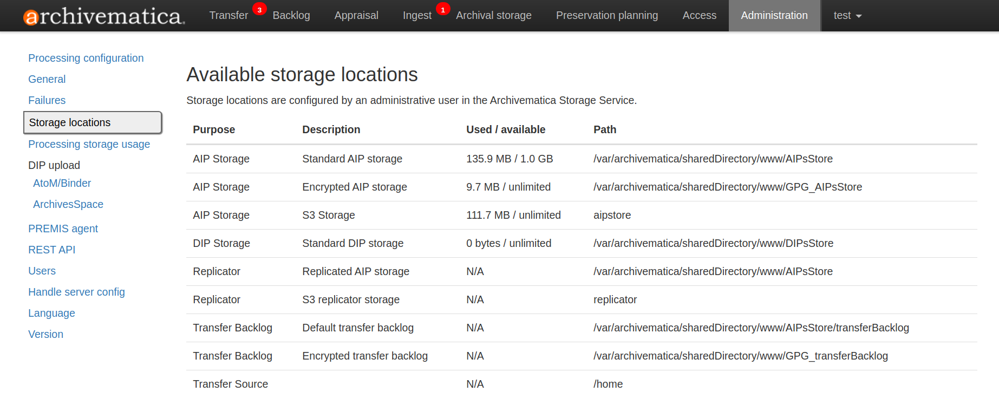
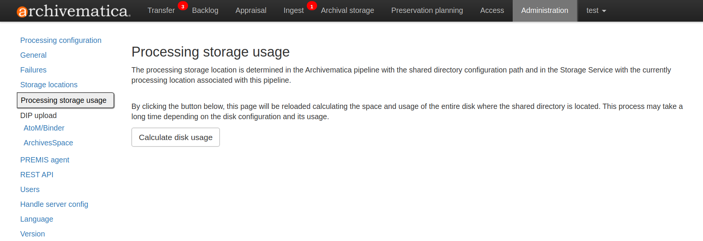
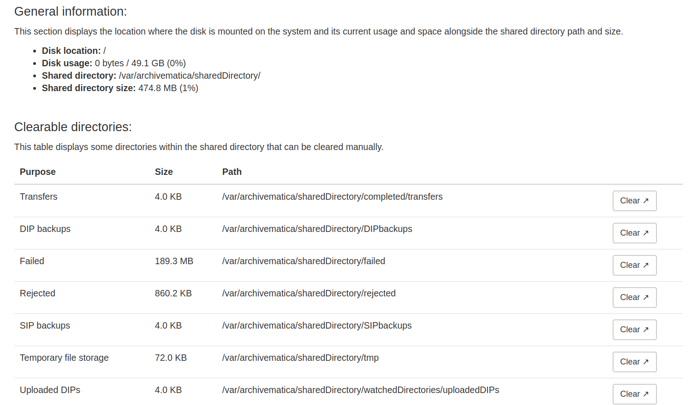
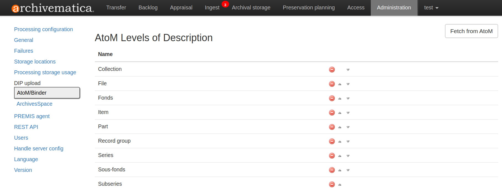
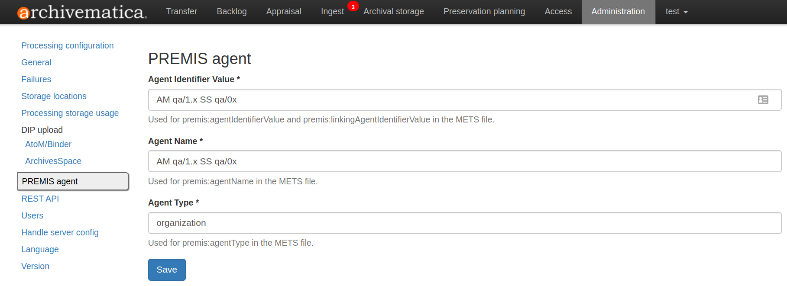

ダッシュボード管理タブ¶
このページでは、Archivematicaのダッシュボードによるユーザー管理について説明します。より高度で技術的な管理文書については、 管理者マニュアル を参照してください。
ダッシュボードの「管理」タブにあるArchivematicaの管理ページでは、アプリケーションの様々な部分を設定し、統合やユーザーを管理できます。
このページでは：
処理設定¶
ダッシュボードの処理設定管理ページでは、転送やインジェスト時にArchivematicaが提示するジョブの決定ポイントを設定できます。インストール時に2つの処理設定が利用可能です：
Defaultは、 転送タブ から手動で開始される転送、 自動化ツール から自動的に開始される転送、または他の処理設定が指定されていないその他のコンテキストで使用されます。Automatedは、一部の外部環境（Jisc RDSSなど）から自動的に開始される転送に使用され、転送タブでユーザーが選択もできます。

既存の処理設定ファイルを編集するには、処理設定名の右にある Edit ボタンをクリックします。
複数の処理コンフィギュレーションを作成するには、処理コンフィギュレーション画面の 追加 ボタンを使用します。オーディオビジュアル素材用、画像用、テキスト記録用など、異なるタイプのコンテンツ用に複数のコンフィギュレーションを作成することがよくあります。
また、 Reset をクリックすることで、デフォルトおよび自動処理設定をプリセットに戻すことができます。デフォルト処理設定のプリセットは、以下の 処理設定フィールド セクションに記載されていることに注意してください。
代わりの処理設定（例：デフォルト以外）は、2つの方法で使用されることに注意してください：
AIPを再インジェストする際、どの処理設定を使用するかを選択する機会が与えられます。
Download をクリックして、processingMCP.xmlファイルをダウンロードできます。次に、ファイル名を
processingMCP.xmlに変更し、転送のトップレベルに含めます。Archivematicaは、デフォルトの設定ではなく、このファイルを使用して転送の選択を自動化します。processingMCP.xmlファイルの詳細については、 Creating a custom config with processingMCP.xml を参照してください。
他のすべての転送では、デフォルトの処理設定を使用します。
選択項目を編集するには、ジョブ名の右側にあるドロップダウンメニューから選択します。すべての選択を終えたら、処理設定を保存してください。フィールドについては、次のセクションで説明します。
{kind=link}

設定フィールドの処理¶
[Archivematica 転送] と [インジェスト] タブにある多くのジョブには、設定可能な決定ポイントがあります。これらの決定を自動化することで、特に同じ決定を何度も選択している場合、転送とインジェストのプロセスを大幅に短縮することができます。以下は、処理設定フォーム フィールドのリストと、それらの機能と各フィールドのドロップダウンオプションに関する簡単な説明です。
アスタリスクでマークされたオプションは、デフォルト処理設定の事前設定値です。デフォルト設定を変更した場合は、 リセット をクリックして、すべての変更をインストール前の設定に戻すことができます。
名前¶
編集するprocessingMCP.xmlの名前。
ディレクトリにUUIDを割り当てる¶
ディレクトリにはfileSecのエントリが与えられ、一意のユニバーサル識別子（UUID）が割り当てられます。転送中のデジタルオブジェクトには常にUUIDが割り当てられることに注意してください。
オプション：
なし - ユーザーに決定を促します。
はい - UUID が割り当てられます。
いいえ - UUID は割り当てられません。*
転送構造レポートの作成¶
オリジナルの転送構造のディレクトリツリーを示すテキストファイルが生成されます。
オプション：
なし - ユーザーに決定を促します。
はい - 構造レポートが作成されます。*
いいえ - 構造レポートは作成されません。
ファイル識別の実行（転送）¶
転送するファイルのフォーマットを識別するかどうかを選択します。
オプション：
なし - ユーザーに決定を促します。*
はい - 有効なファイル識別コマンドを使用します。詳細は、 識別 を参照してください。
いいえ - ファイルは特定されません。
パッケージの抽出¶
パッケージ（.zipファイルなど）は解凍され、ディレクトリに展開されます。
オプション：
なし - ユーザーに決定を促します。*
はい - パッケージの中身が抽出されます。
いいえ - パッケージは現状のままです。
抽出後にパッケージを削除します¶
前のステップで抽出されたパッケージは、抽出後に削除できます。
オプション：
なし - ユーザーに決定を促します。*
はい - パッケージは削除されます。
いいえ - パッケージは、抽出されたコンテンツとともに保存されます。
注釈
Dataverse 転送を処理する場合は、"いいえ"を選択する必要があります。パッケージが削除されると、Dataverse転送は失敗します。
オリジナルのポリシーチェックを実行¶
MediaConch を使用してポリシーを作成した場合、Archivematicaは、元の転送素材をポリシーに照らして実行し、適合性を評価します。
オプション：
なし - ユーザーに決定を促します。
はい - 転送はあらゆるポリシーと照合されます。
いいえ - ポリシーは無視されます。*
内容検査¶
Bulk Extractor を実行します。これは、クレジットカード番号、社会保障番号、およびデータ内のその他のパターンを認識できるフォレンジックツールです。Bulk Extractorログのレビューの詳細については、[評価] タブの 分析ペイン（ ）を参照してください。
オプション：
なし - ユーザーに決定を促します。*
Skip examine contents - Bulk Extractorが実行されません。
はい - Bulk Extractorは、コンテンツをスキャンし、認識されたパターンのログ出力を作成してレビューします。
SIPの作成¶
転送から正式のSIPを作成するか、バックログに送ります。
オプション：
なし - ユーザーに決定を促します。*
単一のSIPを作成し、処理を続行 - 転送は、SIPとなり、インジェストタブでさらに処理できるようになります。
バックログに送信 - 転送は、一時保管または評価のためにバックログ保管スペースに送られます。
注釈
Archivematicaをインデックスレスモード（Elasticsearchを使用しない）で実行している場合、バックログは、使用できなくなり、このドロップダウンに Send to backlog オプションは表示されません。
ファイルフォーマット識別コマンドの選択（インジェスト）¶
SIP内のファイルのフォーマットを識別するために選択します。
オプション：
なし - ユーザーに決定を促します。
はい - 有効なファイル識別コマンドを使用します。詳細は、 識別 を参照してください。
いいえ、既存のデータを使用します - 転送タブからファイル識別データを再利用します。*
正規化¶
インジェストされたデジタルオブジェクトを、保存形式および/またはアクセス形式に変換します。詳しくは、 正規化 を参照してください。
オプション：
なし - ユーザーに決定を促します。*
保存とアクセスのために正規化 - オブジェクトの保存コピーと、DIPの生成に使用されるアクセスコピーを作成します。
保存のために正規化 - 保存用コピーのみを作成します。アクセスコピーは作成されず、DIPも生成されません。
アクセス用に正規化 - AIPは、オリジナルのみを含みます。保存コピーは作成されません。DIPの生成に使用されるアクセスコピーが作成されます。
アクセス用のサービスファイルを正規化 - 詳細は、 サービス（メザニン）ファイルで素材を転送 を参照してください。
手動で正規化 - 詳細は、 手動正規化 を参照してください。
正規化しない - AIPには、原本のみが含まれます。保存用コピーやアクセス用コピーは生成されず、DIPも生成されません。
正規化を承認¶
ダッシュボードでは、正規化出力と正規化レポートを確認できます。
オプション：
なし - ユーザーは、正規化をレビューし、承認する機会があります。*
はい - レビューステップをスキップし、自動的に処理を続けます。
サムネイルの生成¶
これにより、AIPおよびDIPで使用するサムネイルを生成するオプションが提供されます。
オプション：
なし - ユーザーに決定を促します。
はい - サムネイルは、FPRのフォーマット規則に従って生成されます。ルールのない書式では、デフォルトのサムネイルが生成されます（灰色の文書アイコン）。*
はい、デフォルトアイコンなし - サムネイルは、FPRに normalize for thumbnails ルールがあるフォーマットに対して生成されます。ルールがないフォーマットでは、サムネイルは生成されません。
いいえ - サムネイルは生成されません。
保存派生物のポリシーチェックを実行¶
MediaConchを使用してポリシーを作成する場合は、新しく作成された保存派生物に対してポリシーを実行して、適合性を確認します。
オプション：
なし - ユーザーに決定を促します。
はい - 正規化されたファイルは、あらゆるポリシーに対して確認されます。
いいえ - ポリシーは無視されます。*
アクセス派生物のポリシーチェックを実行¶
MediaConchを使用してポリシーを作成する場合は、新しく作成された保存派生物に対してポリシーを実行して、適合性を確認します。
オプション：
なし - ユーザーに決定を促します。
はい - 正規化されたファイルは、あらゆるポリシーに対して確認されます。
いいえ - ポリシーは無視されます。*
Bind PID¶
永続的な識別子を割り当て、情報をHandle.Netサーバーに送信します。詳細は、 Bind PIDs を参照してください。
オプション：
なし - ユーザーに決定を促します。
はい - PIDが作成され、APIコールがPIDをハンドルサーバーにポストします。
いいえ - PIDは作成されません。*
空のディレクトリを文書化¶
デフォルトでは、Archivematicaは、空のディレクトリを削除し、それらが存在したことを文書化しません。
オプション：
なし - ユーザーに決定を促します。
はい - ディレクトリのエントリがstructmapに作成されます。
いいえ - ディレクトリは文書化されません。*
備考：必要に応じてメタデータを追加します¶
Archivematicaでは、ユーザーインターフェースを通じて、 、SIPにメタデータ を追加できます。このリマインダーは、メタデータを追加できる最後の瞬間に表示されます。インジェストがこのポイントを過ぎると、SIPにメタデータを追加することはできなくなります。
オプション：
なし - ユーザーがメタデータを追加する機会があります。*
続ける - リマインダーをスキップし、自動的に処理を続けます。
ファイルのテキスト変換（OCR）¶
ユーザーは、Archivematicaに含まれるOCRツールであるTesseractを実行して、ファイルのトランスクライブを含むテキストファイルを作成できます。詳細については、（ Transcribe SIP contents ）を参照してください。
オプション：
なし - ユーザーに決定を促します。*
はい - Tesseractは、OCR可能な全てのファイルで動作します。
いいえ - Tesseractが動作しません。
ファイル形式識別コマンドの選択（提出文書とメタデータ）¶
転送に含まれる提出書類および/またはメタデータファイルの形式を特定するツールを選択します。
オプション：
なし - ユーザーに決定を促します。
はい - 有効なファイル識別コマンドを使用します。詳細は、 識別 を参照してください。*
いいえ - ファイルは特定されません。
圧縮アルゴリズムの選択¶
Archivematicaで作成されたAIPは、お客様のストレージ要件に応じて、圧縮パッケージまたは非圧縮パッケージとして保存できます。
オプション：
なし - ユーザーに決定を促します。
7z using bzip2 - 7Zipファイルは、 bzip2 アルゴリズムを使用して作成されます。*
7z using LZMA - 7Zipファイルは、 LZMA アルゴリズムを使用して作成されます。
7z without compression - 7Zip ファイルは作成されますが、内容は圧縮されません。
Gzipped tar - AIPは、 gzip アルゴリズムで作成されます。
Parallel bzip2 - 7Zipファイルは、 Parallel bzip2（pbzip2） アルゴリズムを使用して作成されます。
非圧縮 - AIPは圧縮されません。
圧縮レベルを選択¶
上記のステップで圧縮を選択した場合、AIPをどの程度圧縮するかを決定できます。高い圧縮レベルを選択すると、結果のAIPは小さくなりますが、圧縮にも時間がかかります。圧縮レベルが低いと、圧縮は早くなりますが、AIPは大きくなります。
オプション：
なし - ユーザーに決定を促します。
1 - 最速圧縮 - AIPは、できるだけ早く圧縮されます。
3 - 高速圧縮 - 速く圧縮されるより大きなAIP。
5 - 通常の圧縮 - 圧縮ツールは、スピードと圧縮のバランスをとり、適度な大きさで適度に圧縮されたAIPを作ります。*
7 - 最大圧縮 - AIPが小さくなり、圧縮に時間がかかります。
9 - 超圧縮 - 可能な限り小さなAIP。
注釈
前のステップで 非圧縮 または 7z圧縮なし を選択した場合、圧縮レベルは、パッケージに影響しません。
AIPの保存¶
[AIPの保存]マイクロサービスで一時停止すると、ユーザーは、保存前にAIPの内容を確認できます。保存前にAIPを手動でレビューしたくない場合は、このレビューステップをバイパスするように設定できます。
オプション：
なし - ユーザーに決定を促します。*
はい - AIPは、自動的に保存用にマークされます。
[AIPの保存]の場所¶
前のステップが承認されると、優先場所を設定することにより、AIPを指定された保存場所に自動的に送ることができます。
オプション：
なし - ユーザーに決定を促します。*
デフォルトの場所 - AIPは、ストレージサービス でデフォルトとして定義されたAIP保存場所に保存されます。
[その他の保存場所] - 利用可能なその他のAIP保存場所もこのリストに表示されます。
DIPのアップロード¶
DIPが作成されると、Archivematicaと統合されているアクセスシステムに自動的に送信されます。
オプション：
なし - ユーザーに決定を促します。*
DIPをAtoMにアップロード - AtoM DIPアップロードの文書を参照してください。
DIPをArchivesSpaceにアップロード - ArchivesSpace DIPアップロードの文書を参照してください。
DIPをCONTENTdmにアップロード - CONTENTdm DIPアップロードの文書を参照してください。
アップロードしない - DIPは、アクセスシステムにアップロードされません。
DIPの保管¶
DIPが作成された場合、ダッシュボードのワークフローを中断することなく、DIPを保存できます。DIPの保存は、必須ではなく、 AIP を再インジェストすることで、DIPをオンデマンドで作成できることに注意してください。
オプション：
なし - ユーザーに決定を促します。*
DIPの保存 - DIPは、自動的に保存用にマークされます。
保存しない - DIPは廃棄されます。
DIPの保存の場所¶
前のステップとこのステップが構成されている場合、すべてのDIPは、選択された保存場所に送信されます（別の場所を定義するカスタム処理設定が転送に含まれている場合を除く）。
オプション：
なし - ユーザーに決定を促します。*
デフォルトの場所 - DIPは、Storage Serviceでデフォルトとして定義されているDIPストレージの場所に保存されます。
[その他の保存場所] - 利用可能なその他のDIP保存場所もこのリストに表示されます。
一般¶
このセクションでは、Archivematicaクライアントの以下の設定を行います：
Storage Serviceオプション
チェックサムアルゴリズム
Elasticsearchインデックス作成
{kind=link}

ダッシュボードの「管理」タブにある一般設定オプション¶
Storage Serviceオプション¶
ここには、ユーザー名とAPIキーとともに、Storage Serviceの完全なURLがあります。この機能の詳細については、Storage Serviceの文書を参照してください。
チェックサムアルゴリズム¶
転送における Assign UUIDs and checksums マイクロサービスで、Archivematicaがどのチェックサムアルゴリズムを使用するかを選択できます。MD5、SHA-1、SHA-256、SHA-512から選択します。
Elasticsearchインデックス作成¶
Archivematica 1.7では、Elasticsearchのインストールはオプションです。Elasticsearchは、 Backlog 、 Appraisal 、 Archival Storage の検索に使用されるインデックスを生成します。Elasticsearchを使用せずにArchivematicaをインストールすると、コンピューティングリソースの消費量が削減され、運用の複雑さが軽減されます。Elasticsearchを無効にすると、ユーザーインターフェースにBacklog、Appraisal、Archival Storageのタブが表示されなくなり、これらの機能が利用できなくなります。
一般設定のこのセクションは、Elasticsearchが有効か無効かを示します。

この例では、転送とAIPの両方でインデックスが有効です。¶
転送（「Backlog」と「Appraisal」タブ）、AIP（「Archival Storage」タブ）、またはその両方のインデックス作成を無効にすることが可能です。Elasticsearchの無効化に関する詳細は、管理者マニュアルの Elasticsearch を参照してください。
障害¶
このページは、処理中に障害が発生したパッケージを表示します。

ダッシュボードの障害レポート¶
日付、名前、またはUUIDをクリックすると、障害レポートが表示されます：

障害レポートは、削除をクリックすることでダッシュボードから削除できます。
保存場所¶
[管理]ページのこのセクションには、Archivematicaインスタンスに設定されている保存場所が表示されます。保存場所は、 Storage Service で設定します。この表は、Storage Serviceの情報を示しています。
{kind=link}

保存場所ページの表には、保存場所の 目的 、場所の説明、使用済み容量、パスが表示されます。
保存場所にクォータが設定されていない場合、その場所の利用可能容量は、 無制限 に設定されます。クォータは、 ストレージサービス を通じて、いくつかのタイプのロケーションに設定できます。
使用済み/使用可能 値は、現在、レプリケーター、転送バックログ、転送ソースロケーションなど、すべてのタイプの保存場所では計算されません。
Archivematicaデプロイの構成によっては、すべての保存場所の値が表示されない場合があります。
処理ストレージ使用状況¶
管理画面のこのセクションには、Archivematicaインスタンスの現在処理中のロケーションが表示されます。現在処理中のロケーションは、処理中の素材を保管するために使用されます。また、失敗した転送や拒否された転送など、特定のタイプのコンテンツの一時的な保管ディレクトリとしても使用されます。
ページに移動したら、 Calculate disk usage をクリックし、ディスク使用量を確認します。Archivematicaインスタンスの構成や現在のディスク使用状況によっては、計算に時間がかかる場合があります。ディスク使用量の計算中は、素材の処理を続けることができます。
{kind=link}

計算されると、 一般情報 セクションで、ディスクがシステムにマウントされている場所と現在の使用量（計算可能な場合）が表示されます。共有ディレクトリのパスも、割り当てサイズと現在の使用量とともに表示されます。
クリア可能なディレクトリ セクションには、共有ディレクトリにあるサブセットのディレクトリが列挙されます。各ディレクトリの目的、サイズ、パスが記載されています。
{kind=link}

ユーザーは、ディレクトリの Clear ボタンをクリックして、処理場所のコンテンツを削除できます。サーバーのスペースを節約するために、処理ディレクトリを定期的にクリアするのは良いアイデアです。
注釈
Linuxの空のディレクトリのサイズは4 KBです。
DIPアップロード¶
Archivematica has access integrations with two access platforms: AtoM and ArchivesSpace. For more information on Archivematica integrations, please see the Integrations page.
AtoM DIP upload¶
Archivematica can upload DIPs directly to an AtoM website so that the contents can be accessed online.
For more information on configuring the AtoM DIP upload parameters and the servers, please see the AtoM DIP upload configuration instructions.
記述のレベル
You can fetch levels of description from AtoM so that they can be used for SIP arrangement. From the AtoM page in the Administration tab, click on Levels of Description, then Fetch from AtoM to get an updated list from the AtoM levels of description taxonomy.
{kind=link}

AtoMタクソノミーの中にArchivematica SIP arrangeで使用したくない記述レベルがある場合、赤い削除ボタンで削除できます。この画面の上下矢印で、SIP arrangeに表示する順番を変更できます。
注釈
ArchivematicaからのDIPアップロード用にAtoMを設定するには、管理者が必要な場合があります。管理者の手順については、管理者マニュアルの AtoM DIPアップロード を参照してください
ArchivesSpace DIPアップロード¶
ArchivesSpaceにデジタルオブジェクトをインジェストする前に、ダッシュボードの管理タブにあるArchivesSpace DIPアップロード設定が設定されていることを確認してください。
ArchivesSpace DIPアップロードパラメーターの設定については、管理者マニュアル ArchivesSpace DIPアップロード の設定手順を参照してください。
PREMISエージェント¶
PREMISエージェント名とコードは、管理インターフェイスで設定できます。
{kind=link}

PREMISエージェント情報は、Archivematicaが作成するMETSファイルで、デジタル保存イベントを実行するエージェンシーを特定するために使用されます。
REST API¶
Archivematicaには、転送承認を自動化するためのREST APIが含まれています。Artefactualでは、技術管理者がこの機能のオプションを設定することを推奨しています。
自動化にREST APIを使用するようにArchivematicaを設定するには、 管理者マニュアル - REST API を参照してください。
ユーザー¶
Archivematicaダッシュボードでは、 Django認証フレームワーク を使用したシンプルなクッキーベースのユーザ認証システムを提供しています。ダッシュボードへのアクセスは、ログインしたユーザーに限定され、ユーザーが認識されない場合は、ログインページが表示されます。データベースにユーザーがない場合、代わりにユーザー作成ページが表示され、管理者ユーザーを作成できます。
ユーザーは、[管理]タブの[ ユーザー] セクションから作成、変更、削除できます。新規ユーザーをシステムに追加するには、 新規追加 をクリックします。
フィールド：
ユーザー名 ：ログイン画面で使用される名前。必須、255文字以下。ASCII文字、数字、
@、.、+、-、_文字のみ使用できます。名前 ：ユーザーのファーストネーム。オプション。
姓 ：ユーザーのファーストネーム。オプション。
メールアドレス ：ユーザーの名前。省略可能ですが、ユーザーがシステムからの電子メールを受信したい場合は入力する必要があります。
アクティブ ：このユーザーをアクティブとして扱うかどうかを指定します。非アクティブユーザーは、Archivematicaインスタンスにログインできませんが、アカウントは保持されます。
管理者 ：ユーザーに管理者権限を与えるには、このボックスにチェックを入れます。管理者は、他のユーザーを作成、編集、削除できます。
パスワード ：新規ユーザーを作成する際、パスワードを設定する必要があります。ユーザーは、初回ログイン時にパスワードを変更する必要があります。
パスワード確認 ：確認のため、上記と同じパスワードを入力してください。
システムメールを送信しますか？ ：チェックを入れると、このユーザーは、障害通知や正規化レポートなどのシステムメールを受信します。Archivematicaサーバーに関連するメールサーバーが設定されている必要があります。
ユーザーの作成、削除、セキュリティの詳細については、管理者マニュアルの ユーザー セクションを参照してください。
サーバー設定の処理¶
Archivematicaは、ファイル、ディレクトリ、AIP全体に永続識別子（PIDS）と派生永続URL（PURL）を割り当てることができるように、Handle System HTTP APIへのリクエストを行うように設定できます。
言語¶
言語メニューでは、選択した言語から選択できます。
Archivematicaは、 Transifex を通じてボランティアによって翻訳されています。言語の完全性は、Transifexで翻訳された文字列の数により異なります。Archivematicaプロジェクトへの翻訳の貢献については、 翻訳 を参照してください。
バージョン¶
このタブには、使用しているArchivematicaのバージョンが表示されます。